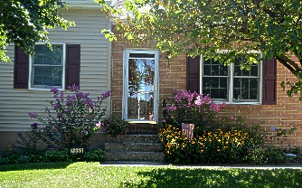
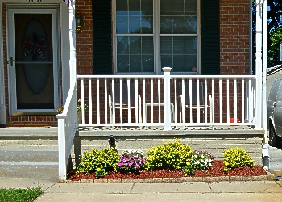
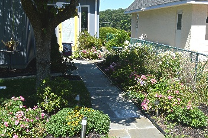

Flower Beds
Second Chance Gardens works with local nurseries in the Pasadena, MD area to choose flowers for our senior’s gardens that are in season and will keep coming back every year, meaning we try to choose only perennial plants. We also work with professional landscape artist that design all our flower bed arrangements in order to suite each individual seniors needs and yard. We go over all design and flower options with the seniors before starting any work. We understand everyone has their own preferences and opinions so we try to cater to each individual senior’s personality.
| Samples from Previous Satisfied Customers | ||
|---|---|---|
| Double Front Door Gardens  |
Single Front Door Garden  |
Side Walk Gardens  |
If you know a senior in need of some help or your a senior yourself that needs some help please contact us to talk to a representative and schedule an appointment